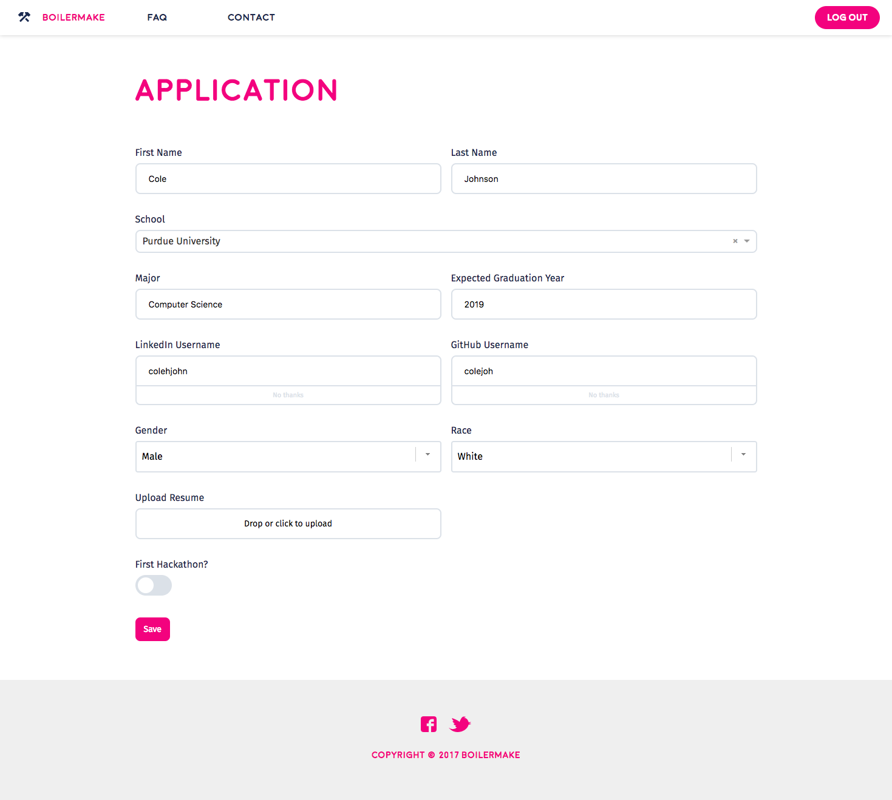
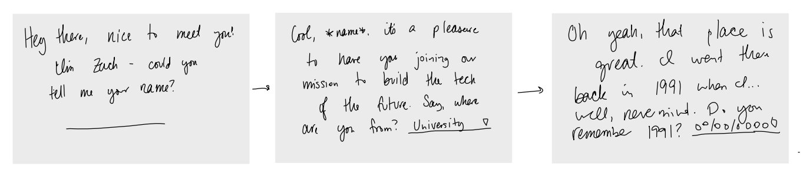
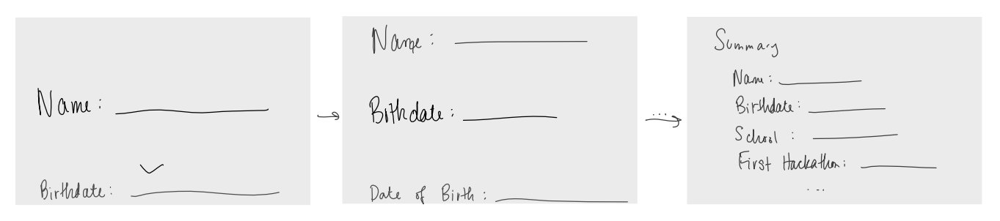
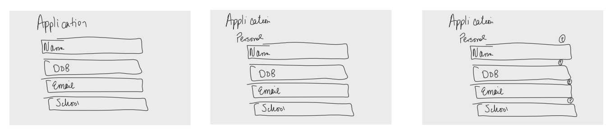
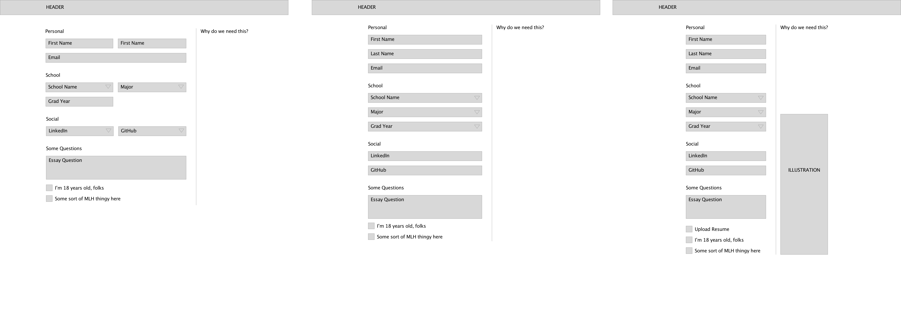
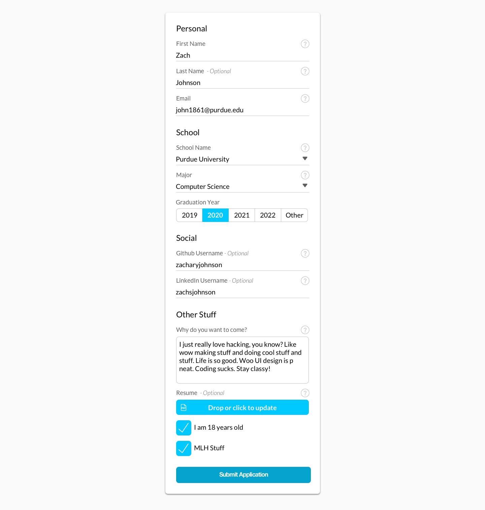

II. Rethink the application
How to simplify the process while still gathering the information we need
After the development of BM-Kit, my first task was to implement it with the design of the application. Though a seemingly menial task, I set out to design the application with these goals of BoilerMake in mind:
- Get as many completed applications as possible
- Collect enough information to determine quality hackers from the people showing up for the free t-shirt
- Only collect the information we need, or the information that Major League Hacking requires
- Inform applicants our reasoning for collecting the information we do, and make optional information visibly optional
My process started by looking through the applications of previous years. The following example is the format the team used. While aesthetically pleasing, it has a large cognitive load - the applicants have numerous directions to look to fill out the fields. Previous years had a large percentage of applicants that missed fields or simply did not finish submitting the application.

Brainstorming
I started brainstorming other ways to build the application. Ideas I toyed with include:

Creating a game-like, story-driven application design: Questions are posed in the form of sentences with fill in the blank slots. The design and illustrations add to the experience.
Pros
Engaging
Adds to the BoilerMake we're pushing
Cons
Considerable amount of work
Slows the application process for users
Difficult for the dev team to implement

One input displayed on screen at a time, allow for scrolling between them
Pros
Allows an applicant to focus on what they’re
typing - good for essays
Can involve fun motion design
Cons
Slows the application process
Difficult to review input before submitting
Difficult for the dev team to implement

Create a single-column input with each question - display them all at once
Pros
Quickly tab between questions
Easily review responses before submitting
Can easily integrate BM-Kit - great for Dev team
Applicants have one direction for flow of responses
Easy to convert to mobile devices
Cons
Not an extremely exciting nor memorable idea
Wireframes
After meeting with the design team, we decided to move forward with the single-column design. I started sketching and wireframing how to set up the design. The single-column already solves the problem of the fields left blank and higher number of incomplete applications; now my focus was how to inform the users of why we’re collecting certain information.

I separated the information we’re collecting into various categories; this helps the user keep track of where they are in the application, while also decreasing the cognitive load of a giant group of questions without separation.
Next, to inform applications as to why we’re collecting certain information, there are two options: display that information by default, or make it incredibly simple for them to find it. I created three variations: one with the information always displayed in a second column, one with the information easily accessible via hovering over a ‘?’ for each section, and one with a ‘?’ for each individual question. Displaying a second column makes the webpage feel off balance and makes the information readily available, but easily missed; displaying a ‘?’ for each section is simple for the view, but makes sorting through the bulk of information difficult for the sections with numerous questions. For those reasons, I moved forward with the third option.
Final Designs
Creating the designs was rather simple after the development of BM-Kit. I used a card to separate the application from the background and illustrations, and used the spacing guidelines to ensure the information hierarchy was the most beneficial it could be. Using BM-Kit, the final design for the application looked like the following:
